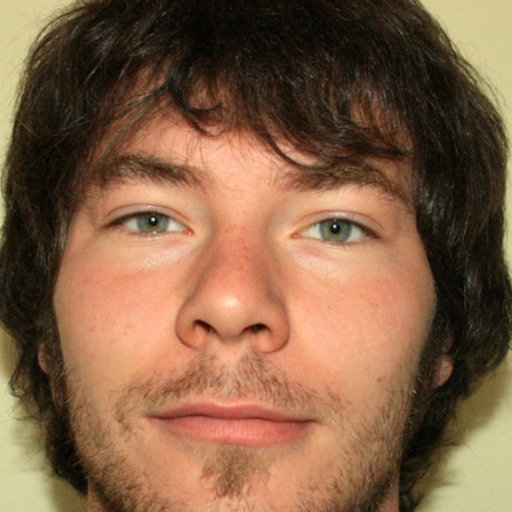

Alessandro Saracino
Biotecnologo e program manager per Fondazione Golinelli. Coordino lo sviluppo di Golinelli LiVE dalla sua nascita.

Matteo Baraldi
Informatico esperto in Unity

Erik Minarini
Informatico Esperto in Unity

Claudia Novara
2D/3D e UX/UI

Luca Polmonari
Ingegnere informatico esperto in tecnologie AR/VR

Luca Silva
Tecnico sviluppatore esperto in tecnologie AR/VR

Matteo Balassso
Ingegnere del software e musicista. Sound design di Golinelli LiVE